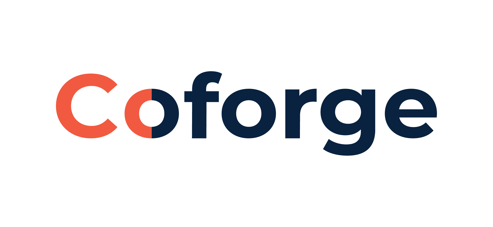
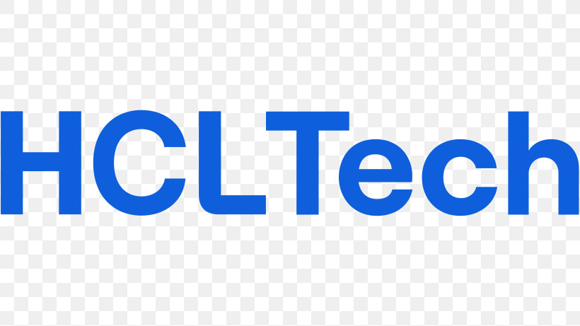
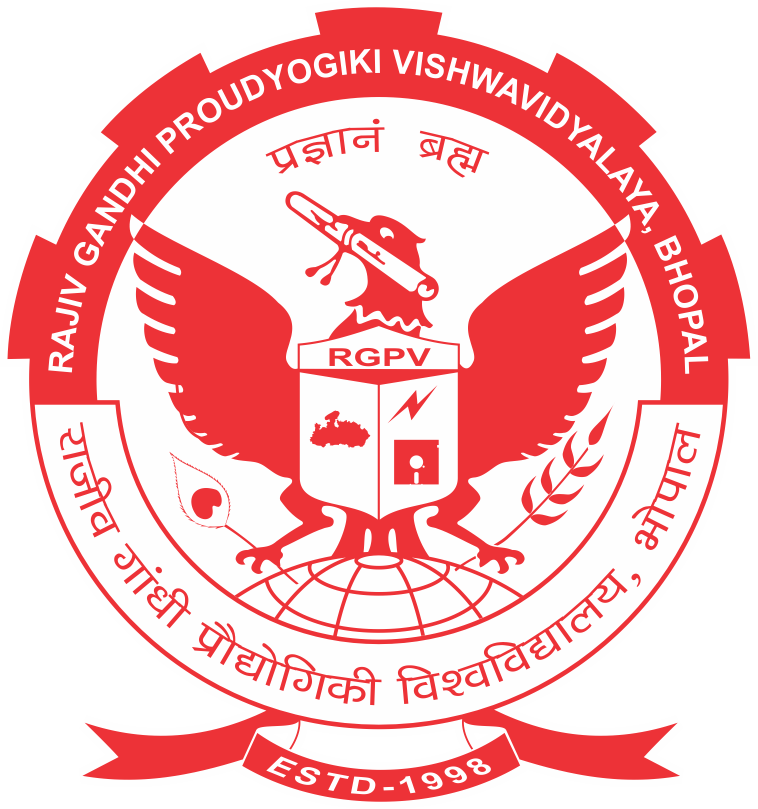

About Me
- 🎓 I'm a Technical Lead – Cloud & Infrastructure with 8+ years of total IT experience, including 5+ years as a DevOps Engineer.
- 🏢 Currently at Coforge, leading cloud and infrastructure initiatives, with prior experience at BMJ Group, UST, Cloud Canyon Software, and HCL Technologies.
- 🌱 Currently deep diving into AWS services and improving my skills in Infrastructure as Code (IaC) using Terraform and CloudFormation.
- 💼 I work with AWS, Docker, Kubernetes, CI/CD tools, and more to help organizations streamline their development and deployment processes.
- 🚀 Passionate about automating workflows, optimizing cloud environments, and ensuring scalable, secure applications.
💼 DevOps & AWS Skills
🌐 AWS Cloud Services
Compute, Storage & Networking
EC2, Lambda, S3, RDS, DynamoDB, EKS, Fargate, CloudFront, VPC, CloudWatch, IAM, Route 53
Infrastructure as Code
Terraform and CloudFormation for repeatable, version-controlled infrastructure.
AWS DevOps Tools
CodePipeline, CodeBuild, CodeDeploy, CloudFormation, Elastic Beanstalk
⚙️ DevOps Tools & Practices
💻 Experience

Coforge
- Technical Lead – Cloud & Infrastructure Oct 2025 – Present · 1 yr · Greater Noida DevOps, AWS +10 skills
- Technical Analyst Sep 2024 – Present · 2 yrs 1 mo · Greater Noida DevOps, Bash +6 skills
- DevOps Engineer Sep 2024 – Present · 2 yrs 1 mo · Greater Noida, Uttar Pradesh, India
BMJ Group — Platform and DevOps Engineer
Worked on AWS, Docker, and CI/CD pipelines for platform infrastructure and automated deployments.
UST — DevOps Engineer
Worked with AWS and Python to build and maintain automated deployment pipelines.
Cloud Canyon Software — Associate Software Engineer
Worked with AWS and Shell Scripting to support cloud infrastructure and deployment automation.

HCL Technologies — System Engineer
Worked as a System Integrator on the Government Police Crime & Criminal Tracking Network and Systems (CCTNS) project using Linux and Shell Scripting.
🎓 Education
Maharaja Agrasen Himalayan Garhwal University
Swami Vivekanand Subharti University (SVSU), Meerut

University Institute of Technology, RGPV
🔧 Tech Stack
🔨 My Projects
Here are some key projects I've worked on:
🏗️ Infrastructure Automation
- Automated AWS Infrastructure Deployment using Terraform for multi-environment setups
- Kubernetes Cluster Management with automated scaling and monitoring
- CI/CD Pipeline Implementation for microservices architecture
☁️ Cloud Migration & Optimization
- Migrated on-premise applications to AWS cloud infrastructure
- Optimized cloud costs by 30% through resource right-sizing and automation
- Implemented disaster recovery solutions with multi-region deployments
🔐 Security & Compliance
- Implemented security best practices using AWS IAM, Security Groups, and KMS
- Automated security audits and compliance checks using AWS Config
- Set up centralized logging and monitoring for security events
📊 Portfolio Stats

Total Portfolio Visitors
🌐 Let's Connect
💬 Open to discussing DevOps practices, cloud infrastructure, and automation solutions.
🌍 Currently located in Coforge at Greater Noida.
"DevOps is not a job title, it's a mindset." – Sandeep